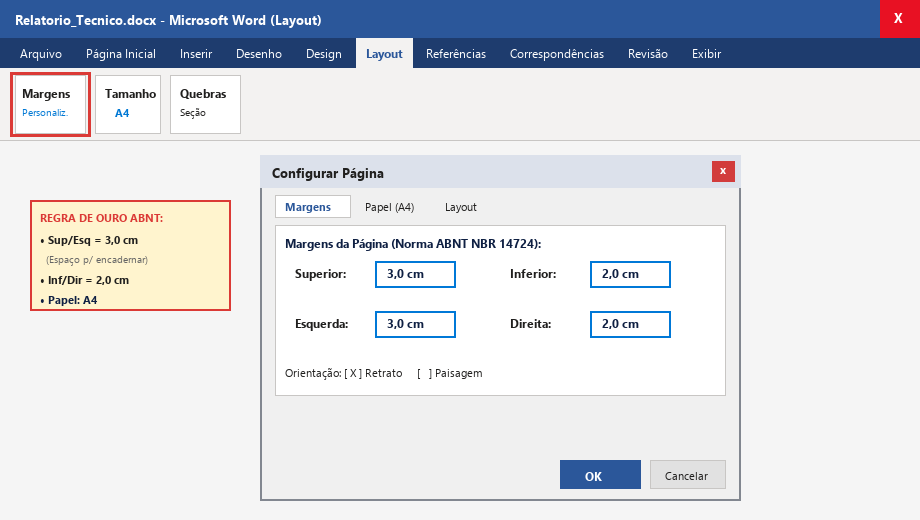
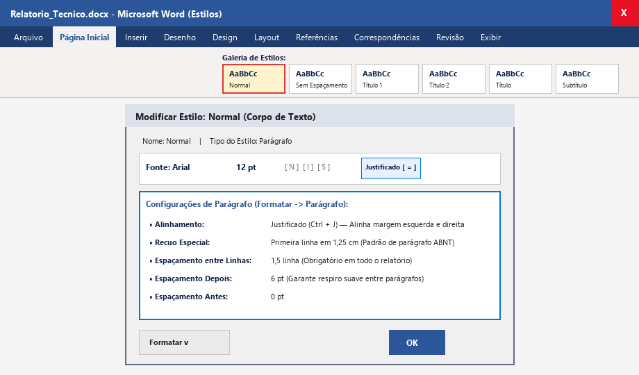
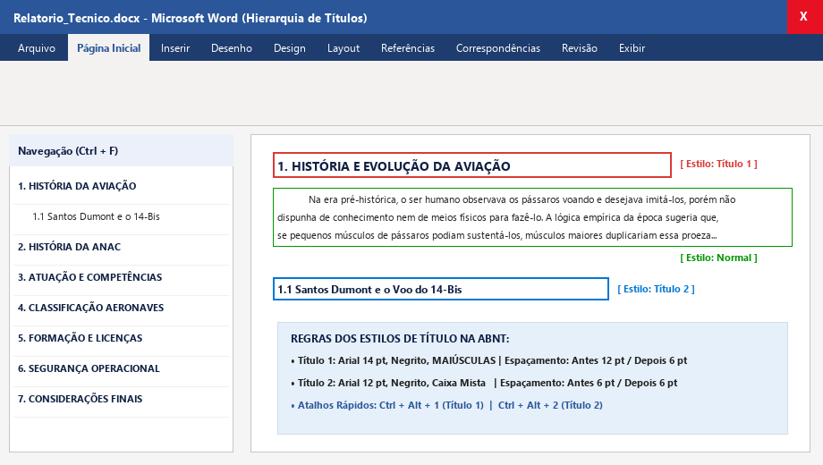
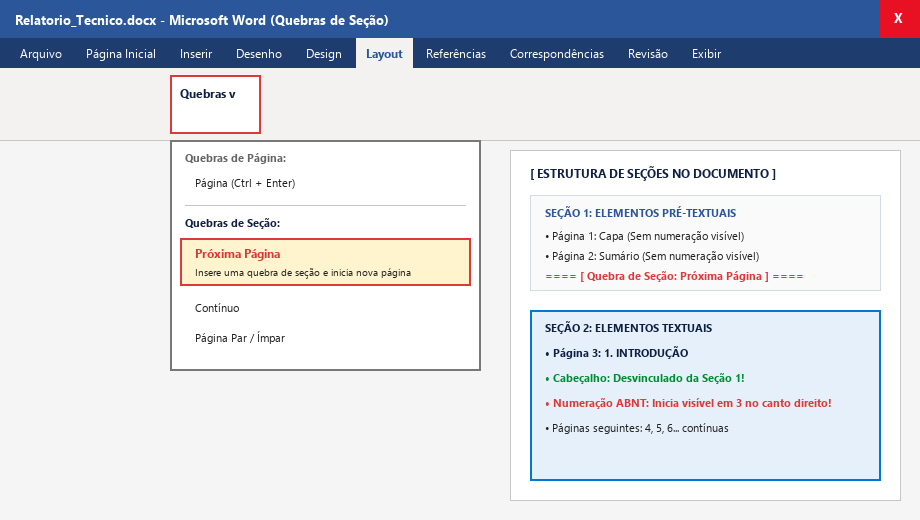
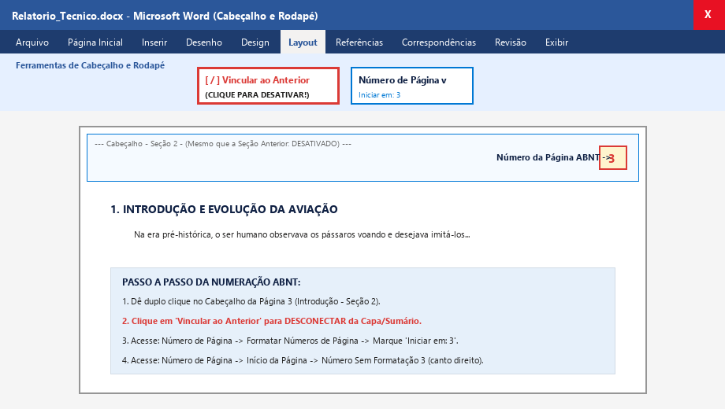
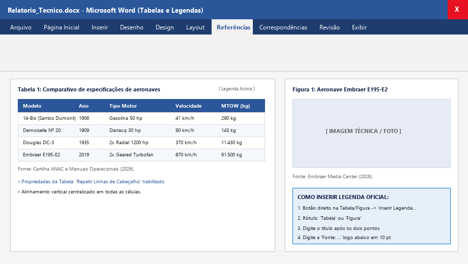
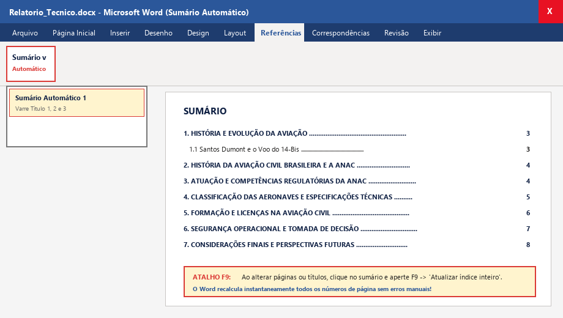
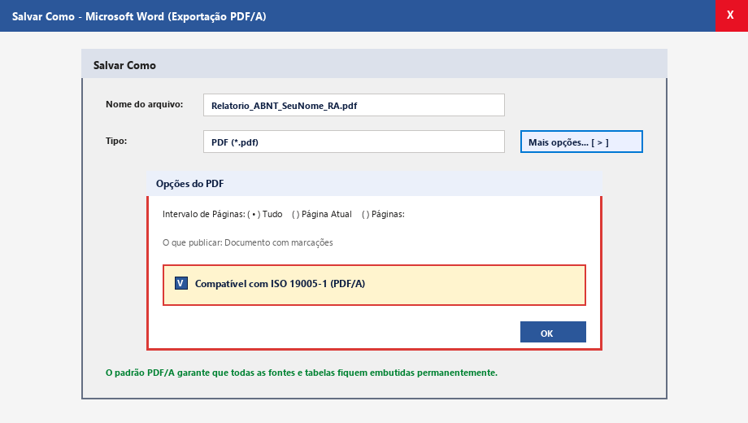

Este guia visual passo a passo foi elaborado especialmente para orientar o estudante do curso de Manutenção de Aeronaves da Fatec Sorocaba na transformação de um texto técnico bruto em um Relatório Técnico Profissional no padrão ABNT, pronto para entrega em disciplinas de engenharia e no Trabalho de Graduação (TG/TCC).
Objetivo de Aprendizagem: Dominar as 8 etapas essenciais de editoração técnica no Microsoft Word (Configuração de Página, Margens ABNT, Estilos de Parágrafo, Quebras de Seção, Numeração de Páginas Desvinculada, Tabelas Técnicas, Figuras com Legendas Oficiais, Sumário Automático e Exportação em PDF/A).
1. Configuração da Página e Margens Oficiais da ABNT
PASSO 1
Definir o Papel A4 e as Margens (3-3-2-2)
Antes de começar a formatar qualquer parágrafo, devemos configurar o espaço físico da folha. A ABNT exige margens assimétricas para permitir a perfuração e encadernação sem que o texto seja cortado:
- Abra o Microsoft Word com o seu documento (ou crie um novo documento em branco).
- Acesse a guia superior Layout.
- No grupo Configurar Página, clique em Tamanho e confirme se está selecionado A4 (21 x 29,7 cm).
- Clique no botão Margens e selecione a opção Margens Personalizadas... (no final do menu).
- Na caixa de diálogo que se abrirá, configure exatamente:
- Superior:
3,0 cm
- Esquerda:
3,0 cm (espaço para encadernação/pasta)
- Inferior:
2,0 cm
- Direita:
2,0 cm
- Clique no botão OK para aplicar a todo o documento.

Figura 1: Acesso ao menu Layout -> Margens Personalizadas e caixa de diálogo Configurar Página configurada no padrão ABNT.
2. Padronização dos Estilos de Parágrafo (Estilo Normal)
PASSO 2
Configurar o Estilo "Normal" (Corpo de Texto)
Regra de Engenharia: Nunca formate parágrafos selecionando texto com o mouse manualmente. Configure o estilo Normal para que todo o texto do documento assuma o padrão ABNT instantaneamente:
- Acesse a guia Página Inicial e localize o quadro de Estilos.
- Clique com o BOTÃO DIREITO sobre o botão Normal e selecione Modificar...
- Na seção Formatação:
- Fonte: Arial (ou Calibri) | Tamanho: 12 pt | Cor: Automático (Preto).
- Clique no botão de alinhamento Justificado (Ctrl + J).
- No canto inferior esquerdo da janela, clique no botão Formatar e escolha a opção Parágrafo...
- Na aba Indentações e Espaçamento, configure:
- Alinhamento: Justificado.
- Especial: Selecione Primeira linha em 1,25 cm (o recuo clássico de parágrafo).
- Espaçamento Antes:
0 pt | Depois: 6 pt.
- Espaçamento entre linhas: 1,5 linha.
- Clique em OK na janela de Parágrafo e em OK na janela Modificar Estilo.

Figura 2: Janela Modificar Estilo e configuração de Parágrafo (Justificado, Recuo 1ª Linha em 1,25 cm e Entrelinhas 1,5).
3. Hierarquia dos Estilos de Título e Painel de Navegação
PASSO 3
Configurar Título 1, Título 2 e Inspecionar no Painel (Ctrl + F)
Os títulos dos capítulos e subseções precisam ser associados aos estilos nativos Título 1 e Título 2 para permitir a geração do Sumário Automático:
| Nível de Título |
Estilo no Word |
Fonte / Tamanho |
Formato Visual |
Espaçamento |
Atalho |
| Capítulo Principal (ex: 1. HISTÓRIA) |
Título 1 |
Arial 14 pt |
Negrito, MAIÚSCULAS |
Antes: 12 pt / Depois: 6 pt |
Ctrl + Alt + 1 |
| Subseção (ex: 1.1 Santos Dumont) |
Título 2 |
Arial 12 pt |
Negrito, Caixa Mista |
Antes: 6 pt / Depois: 6 pt |
Ctrl + Alt + 2 |
| Corpo do Relatório |
Normal |
Arial 12 pt |
Sem negrito, Justificado |
Entrelinhas 1,5 linha |
Ctrl + Shift + N |
Como aplicar no texto: Selecione a linha do título 1. HISTÓRIA E EVOLUÇÃO DA AVIAÇÃO e clique em Título 1. Selecione 1.1 Santos Dumont... e clique em Título 2. Pressione Ctrl + F e clique na aba Títulos para ver o esqueleto do documento.

Figura 3: Aplicação dos Estilos Título 1 e Título 2 e visualização da árvore de tópicos no Painel de Navegação (Ctrl + F).
4. Criação da Capa e Inserção de Quebras de Seção
PASSO 4
Estrutura em Seções: Capa, Sumário e Introdução
Atenção Crucial: Para que a Capa e o Sumário não fiquem com números de página visíveis, o documento deve ser dividido em SEÇÕES independentes utilizando a ferramenta Quebras de Seção (Próxima Página).
- Página 1 (Capa): Digite os dados institucionais centralizados (Instituição, Título, Autor, Local, Ano).
- No final da Capa, acesse a guia Layout -> clique em Quebras -> selecione Quebras de Seção: Próxima Página.
- Página 2 (Sumário): Digite a palavra
SUMÁRIO em maiúsculas (reservada para o sumário automático).
- No final da página do Sumário, insira OUTRA Quebras de Seção: Próxima Página.
- Página 3 em diante: Aqui se inicia a parte textual (
1. HISTÓRIA E EVOLUÇÃO DA AVIAÇÃO), que agora está isolada na Seção 2!
Dica Pro: Ative o botão Mostrar Tudo (¶) na guia Página Inicial para enxergar exatamente a linha com a marcação :::::::::: Quebra de Seção (Próxima Página) ::::::::::.

Figura 4: Inserção de Quebra de Seção (Próxima Página) pelo menu Layout e divisão entre Seção 1 (Capa/Sumário) e Seção 2 (Texto).
5. Desvinculação de Cabeçalhos e Numeração ABNT
PASSO 5
Desativar "Vincular ao Anterior" e Iniciar Numeração em 3
Este é o passo em que a maioria dos estudantes erra. Siga o passo a passo com muita atenção:
- Vá até a Página 3 (onde começa a Introdução) e dê um DUPLO CLIQUE no topo da página (área do Cabeçalho).
- Observe a barra superior intitulada Cabeçalho e Rodapé.
- Localize o botão "Vincular ao Anterior" (ele estará ativado/sombreado).
- CLIQUE NO BOTÃO "VINCULAR AO ANTERIOR" PARA DESATIVÁ-LO! (O botão deve ficar claro/desmarcado). Isso quebra o vínculo com a Capa e o Sumário.
- Ainda na barra de Cabeçalho:
- Clique em Número de Página -> Formatar Números de Página...
- Em Numeração das páginas, marque a opção Iniciar em: e digite o número 3 (contando Capa=1 e Sumário=2). Clique em OK.
- Clique novamente em Número de Página -> Início da Página -> selecione Número Sem Formatação 3 (alinhado no canto superior direito).
- Dê um duplo clique no meio da folha para sair do cabeçalho.
- Verificação Obrigatória: Role a tela até a Capa e o Sumário e confirme que eles NÃO POSSUEM número impresso, e que o número 3 aparece perfeitamente no canto superior direito da Introdução!

Figura 5: Desativação do botão "Vincular ao Anterior" na Seção 2 e inserção do número de página ABNT iniciando visível em 3.
6. Formatação de Tabelas Técnicas e Legendas Oficiais
PASSO 6
Inserir Tabelas com Cabeçalho e Legendas com Fonte
Na Seção 4 do relatório (Classificação das Aeronaves), converta os dados em uma tabela técnica oficial e adicione legendas automáticas:
- Inserir Tabela: Guia Inserir -> Tabela (7 colunas x 8 linhas).
- Design da Tabela: Selecione a primeira linha (cabeçalho), aplique sombreamento escuro e texto em negrito branco. Centralize verticalmente todas as células.
- Repetir Cabeçalho: Clique com o botão direito na tabela -> Propriedades da Tabela -> Linha -> Marcar "Repetir como linha de cabeçalho no topo de cada página".
- Legenda Oficial da Tabela:
- Clique com o botão direito sobre a tabela -> Inserir Legenda...
- Rótulo: selecione Tabela.
- Digite:
: Comparativo de especificações de aeronaves históricas e modernas.
- Posição: Acima do item selecionado.
- Linha de Fonte: Logo abaixo da tabela, digite em fonte Arial 10 pt:
Fonte: Cartilha ANAC e Manuais Operacionais (2026).
- Legenda de Figuras: Para imagens, clique com o botão direito na foto -> Inserir Legenda... -> Rótulo: Figura ->
: Aeronave Embraer E195-E2. Insira a fonte abaixo em 10 pt.

Figura 6: Tabela técnica formatada com legenda superior e indicação de fonte inferior conforme normas da ABNT.
7. Geração do Sumário Automático e a Tecla F9
PASSO 7
Inserir o Sumário Automático na Página 2
- Vá até a Página 2 reservada e posicione o cursor logo abaixo da palavra
SUMÁRIO.
- Acesse a guia Referências.
- No canto esquerdo, clique no botão Sumário.
- Selecione a opção Sumário Automático 1.
- O Word fará a leitura automática de todos os títulos formatados como Título 1 e Título 2 e montará a lista completa com os respectivos números de página!
O Segredo da Tecla F9: Se você adicionar mais textos ou alterar títulos, o sumário não muda sozinho. Basta clicar em qualquer parte do sumário e pressionar a tecla F9 (ou botão direito -> Atualizar Campo -> Atualizar o índice inteiro). O Word recalculará tudo automaticamente!

Figura 7: Geração do Sumário Automático na Página 2 e recurso de atualização instantânea via tecla F9.
8. Exportação Oficial no Padrão PDF/A (ISO 19005)
PASSO 8
Salvar e Exportar o Documento Final Inviolável
O padrão PDF/A é a norma internacional (ISO 19005) exigida para arquivos técnicos e trabalhos acadêmicos porque garante que as fontes, margens e imagens fiquem 100% embutidas, sem risco de desconfiguração em outros computadores:
- Acesse o menu Arquivo -> Salvar Como (ou atalho
F12).
- Escolha a pasta de destino em seu computador.
- Em Nome do arquivo, digite:
Relatorio_ABNT_SeuNome_RA.pdf.
- Em Tipo, selecione PDF (*.pdf).
- Clique no botão Mais opções... (ou Opções...).
- Na caixa de diálogo de Opções, MARQUE A CAIXA DE SELEÇÃO: "Compatível com ISO 19005-1 (PDF/A)".
- Clique em OK e depois em Salvar.

Figura 8: Janela Salvar Como e marcação obrigatória da compatibilidade ISO 19005-1 (PDF/A).
9. Checklist de Autoavaliação do Aluno
Antes de enviar seus arquivos no sistema da disciplina, confira cada um dos itens abaixo:
- Margens: Superior: 3,0 cm | Esquerda: 3,0 cm | Inferior: 2,0 cm | Direita: 2,0 cm | Tamanho: A4.
- Estilo Normal: Fonte Arial ou Calibri 12 pt, Alinhamento Justificado, Entrelinhas 1,5 linha, Recuo 1ª Linha em 1,25 cm.
- Estilos de Título: Título 1 (14 pt, Negrito, MAIÚSCULAS) e Título 2 (12 pt, Negrito) aplicados em todas as 7 seções.
- Painel de Navegação: Pressione
Ctrl + F e veja se todos os 7 capítulos aparecem listados na aba Títulos.
- Quebras de Seção: Quebra de Seção (Próxima Página) inserida no final da Capa e no final do Sumário.
- Desvinculação de Cabeçalho: Botão "Vincular ao Anterior" desativado na Seção 2 (Página 3).
- Numeração ABNT: Capa e Sumário SEM NÚMERO VISÍVEL; número 3 visível no topo direito da Introdução.
- Tabela Técnica: Tabela com cabeçalho formatado em negrito, legenda acima (Tabela 1: ...) e fonte abaixo em 10 pt.
- Figura Técnica: Imagem centralizada com legenda oficial (Figura 1: ...) e indicação de fonte.
- Sumário Automático: Inserido na Página 2 e atualizado com a tecla
F9.
- Arquivos de Entrega: Versão editável (
.docx) e versão final inviolável (.pdf em PDF/A).
Fatec Sorocaba — CST em Manutenção de Aeronaves
Disciplina: INF-117 — Informática Aplicada a Aeronáutica | Prof. André Souza